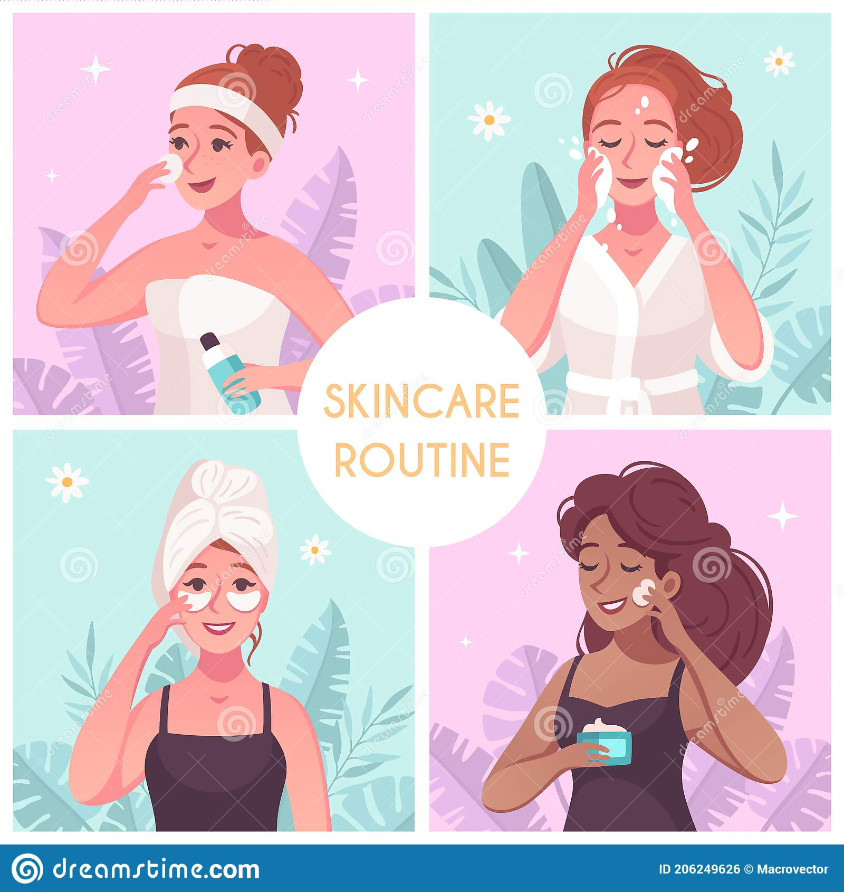
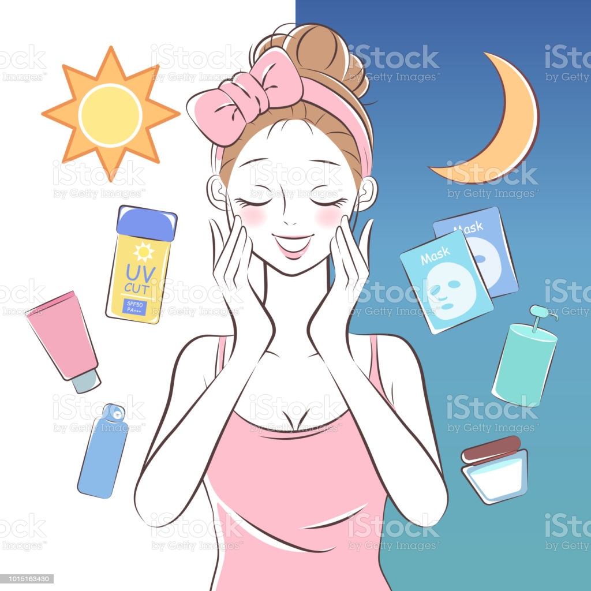
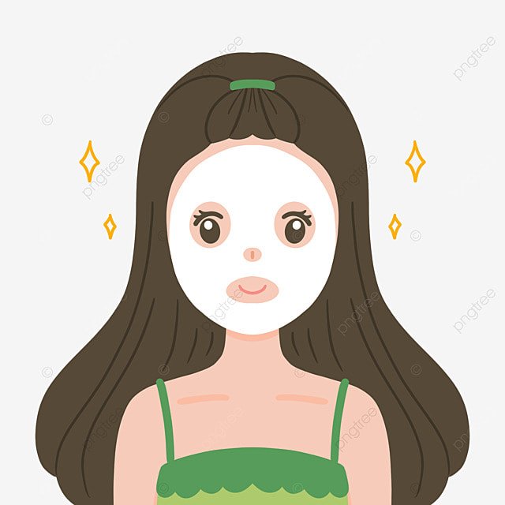

1. Limpieza
Mantener la piel aseada es fundamental, independientemente del tipo de dermis que se tenga. La limpieza facial sirve para eliminar los residuos e impurezas que nuestro rostro va acumulando a lo largo del día y de la noche, pues es la única manera de evitar que se obstruyan los poros. Además, esta primera acción permite preparar la piel para los cosméticos o tratamientos de cuidado que se aplicarán posteriormente.
Escoge tu limpiador facial en función de tu tipo de piel: grasa, seca, mixta, madura o con tendencia acnéica.

2. Tónico facial
La función del tónico es muy importante y debemos incluirlo en nuestra rutina diaria. Se trata de un producto líquido que sirve para cerrar los poros, equilibrar el pH cutáneo, refrescar,
tonificar el cutis y reafirmar la piel.
Debe utilizarse justo después de la limpieza y antes de utilizar cualquier otro producto. El tónico se administra en un disco de algodón que después se aplica en la cara dando ligeros toques circulares con los dedos.
Contorno de ojos
La piel situada alrededor de los ojos es la más delicada de todo el rostro, por lo que es importante cuidarla con un tratamiento específico. En el tercer paso de la protección facial es conveniente escoger un contorno de ojos que se adapte perfectamente a nuestro tipo de epidermis: joven, de mediana edad o madura, aprovechando que existen tratamientos específicos para cada tipo. Debes aplicarse dando toquecitos suaves,
prestando atención a no dañar la zona.

4. Sérum
El sérum es un concentrado de principios activos antioxidantes utilizado para revitalizar la piel y
darle un aspecto radiante. Existen también sérums específicos para ciertas circunstancias, como evitar la aparición de manchas solares en la piel o controlar el acné. Como en el caso de los cosméticos para contorno de ojos, existen también sueros de este tipo específicos para pieles jóvenes,
de mediana edad o maduras, que protegen y realzan la piel a lo largo de toda la vida.

Crema hidratante
Hidratar la piel es el último paso de esta rutina de cuidado facial de día, pero no por ello es menos importante. Es fundamental para conservar la dermis sana y bonita. Las cremas hidratantes nutren la tez y ayudan a conservar su elasticidad. Es imporante escoger una crema hidratante específica para la edad de cada piel y,
si es posible, que contenga protector solar.